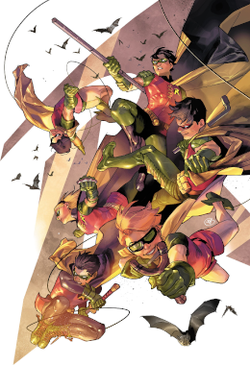

Superhero trivia
Who is superhero?
A superhero or superheroine is a stock character that possesses abilities beyond those of ordinary people, who typically uses his or her powers to help the world become a better place, or is dedicated to protecting the public, and stopping evil. Superhero fiction is the genre of fiction that is centered on such characters, especially in American comic books since the 1930s (and later Hollywood films), as well as in Japanese media (including kamishibai, tokusatsu, manga, anime and video games) since the 1930s.
Top superhero
My favourite superhero
Robin
Robin is the alias of several fictional superheroes appearing in American comic books published by DC Comics. The character was originally created by Bob Kane, Bill Finger, and Jerry Robinson, to serve as a junior counterpart to the superhero Batman. The character's first incarnation, Dick Grayson, debuted in Detective Comics #38 (April 1940). Conceived as a way to attract young readership, Robin garnered overwhelmingly positive critical reception, doubling the sales of the Batman titles. The early adventures of Robin included Star Spangled Comics #65–130 (1947–1952), which was the character's first solo feature. Robin made regular appearances in Batman related comic books and other DC Comics publications from 1940 through the early 1980s until the character set aside the Robin identity and became the independent superhero Nightwing. The team of Batman and Robin has commonly been referred to as the Caped Crusaders or Dynamic Duo.